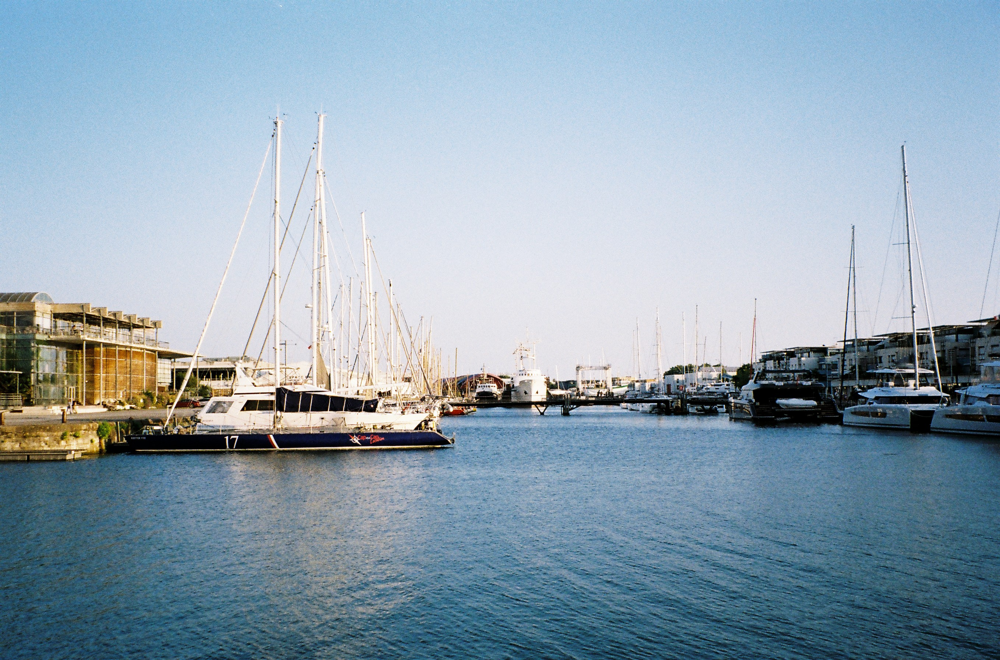
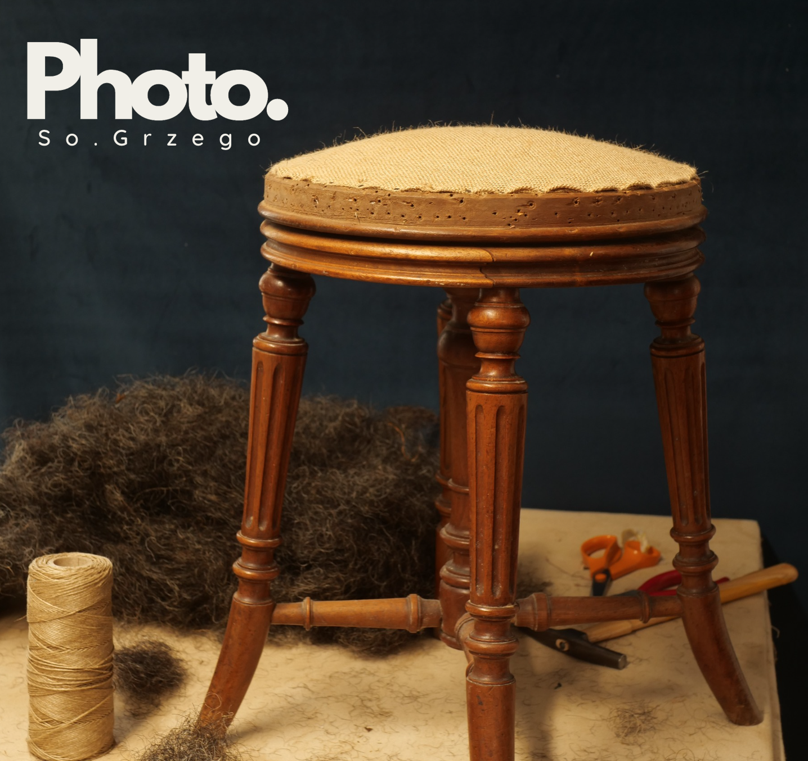
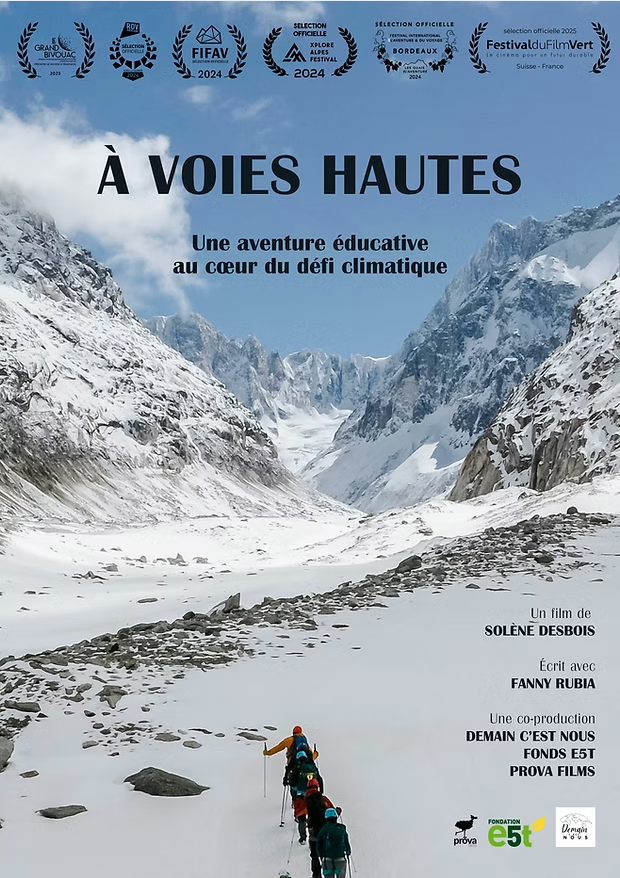
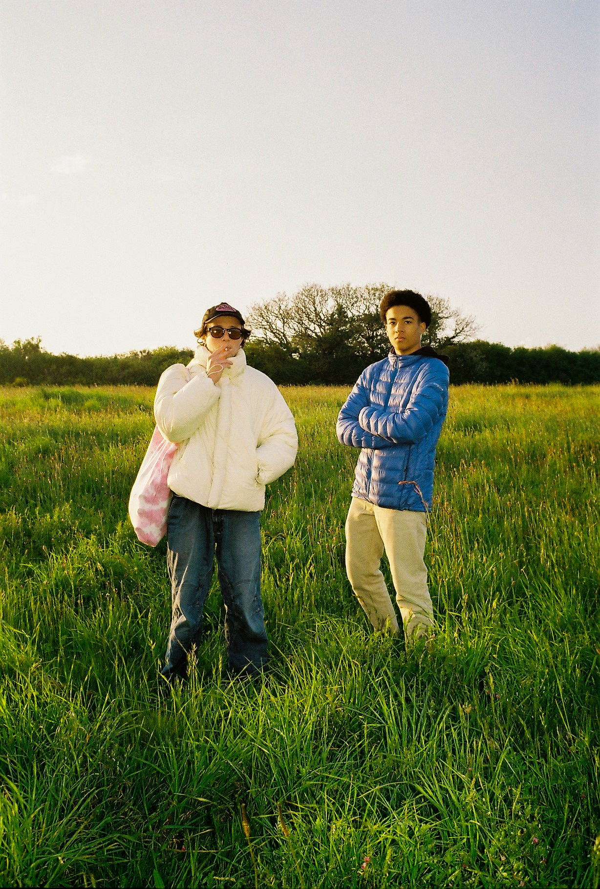
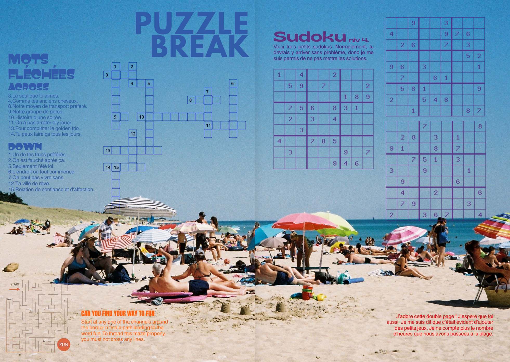
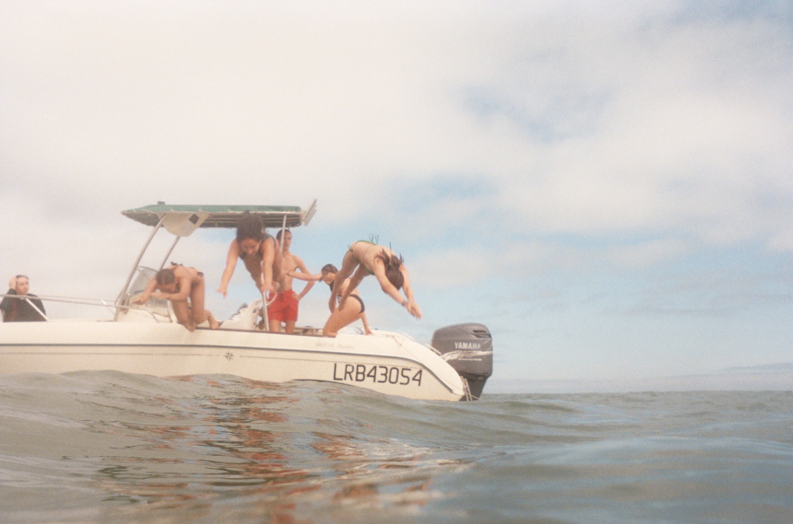
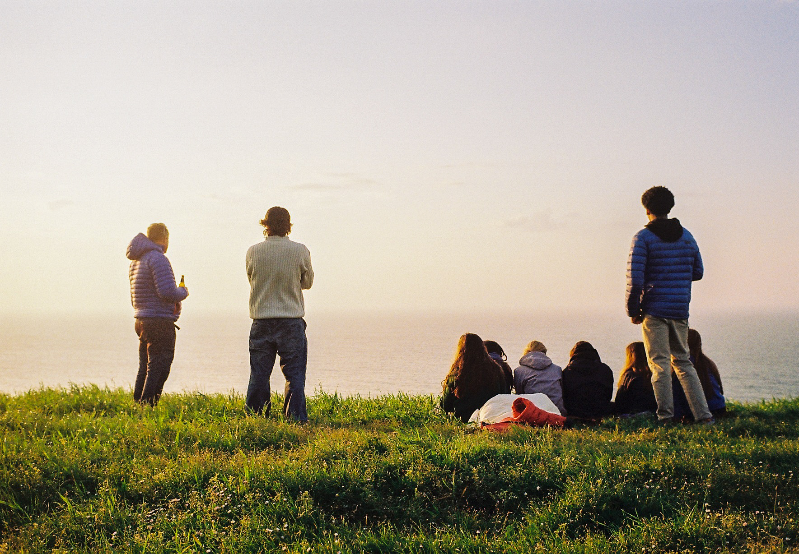

About Me
Hi, I'm Lou Grzegorzek. I've been passionate about environmental causes for years and want to defend them through communication, journalism, and design. I grew up surrounded by a devoted, creative, and environmentally conscious circle. This shaped my desire to use my skills for causes that align with my values.I love the outdoors, creating art, tinkering, family time, reading, staying active, playing with my dog and listening to Marvin Gaye.
Education
EFAP Bordeaux — Communication & Journalism
Fénelon La Rochelle — High School Diploma
Skills
Experiences
Selected projects combining communication, design and environmental engagement.

PROFESSIONAL IMPACT
2025-2026. FR I supported local artists and artisans in showcasing their expertise. Communication is key to highlighting grassroots projects. I helped with communication, marketing, and design. From the brief to the final flyer and gift card, I listened to and supported the client throughout. This experience showed me the power of design in giving visibility to independent creators.

SOCIAL IMPACT
2025. SP Cuchara Roja is a Barcelona association that provides healthy meals to homeless people. For a school project, I created their potential new logo and social media strategy. I also joined them during food distribution. This project showed me the importance of supporting local initiatives and using design for social good.

LONG-TERM COMMITMENT
2022-2024. FR With a small team, I led a waste reduction project at my high school. We handled everything: research, outreach, negotiations, and administrative steps. We were 100% responsible for the project's progress. In 2023, we reduced the school's waste by 40%. This experience taught me the value of commitment, teamwork, and long-term thinking.
2023.FR I participated in a climate expedition with Demain C'est Nous in the French Alps. Alongside activists Heidi Sevestre and Camille Étienne, we collected testimonies from residents witnessing environmental change. The expedition became a documentary now shown to students across France. This experience brought the climate crisis close to home and strengthened my passion for environmental storytelling.
Watch teaser →
DESIGN & CREATIVE IDEAS
2026. FR I designed a personalized magazine for a close friend's 20th birthday. It retraces many moments we shared together. I handled layout, typography, and photo editing using Photoshop, Illustrator, and Canva. I spent weeks organizing, planning, and finding inspiration. My friend was deeply touched. This project confirmed my love for meaningful, thoughtful design.


EXPERIMENTATION & CURIOSITY
2025.FR With my sister, I explored printmaking using kneaded eraser and ink. We created impressions of everyday objects: a chair, a door, a street lamp, a friend's ring. This practice taught me to slow down, observe, and appreciate small details. It's now part of my creative routine.
“Design is not just what it looks like, but how it impacts people and causes.”

BEHIND THE WORK
All these projects, professional and personal, have shaped my path. They taught me to combine creativity, commitment, and communication. I want to use my skills for causes that matter. Art and the environment are at the heart of my approach. My internship at Sea Shepherd Global confirmed one belief: working with teams who share my values is essential. This is what gives my work impact. This portfolio reflects my growth, my learnings, and my determination to create change through communication.
